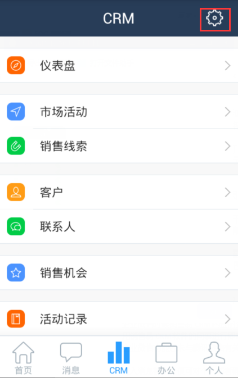
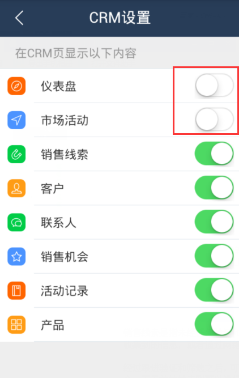
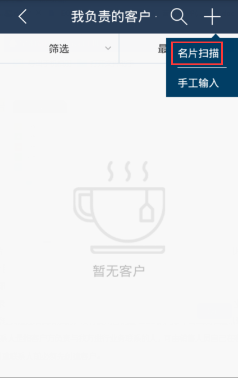

CRM基本功能
-
1、怎么隐藏不使用的功能？
-
答：进入“CRM”点击界面右上角的齿轮图标，可以选择把不常用的节点取消显示。同理，进入“办公”点击界面右上角的齿轮图标，可以选择把不常用的功能取消显示。


-
2、客户是否支持名片扫描功能？
-
答：支持的，销售线索、客户、联系人，这三个节点都支持名片扫描功能。比如，进入“CRM-客户”，点击界面右上角的“＋”号，选择名片扫描即可

-
3、怎样提高名片扫描的正确率？
-
答： 拍摄的名片图片区域占图片有效区域80%以上； 对焦清晰，横屏拍摄；名片图片平放拍摄，拍摄名片图片不变形。
-
4、办公中的通讯录和CRM中的联系人什么区别？
-
答：办公-通讯录功能是指企业内部同事的通讯录，不受权限控制，只要在同一个企业就可查看。同事是管理员通过后台增加的，没有使用营销通CRM的同事不会出现在通讯录中。而CRM中的联系人是指客户方负责与我方进行业务联系的人，可由销售人员自己在客户下创建。注意，创建联系人前必须先创建客户。
-
在同事的个人资料界面，有电话、邮箱、短信按钮，可以方便的给同事打电话、发邮件、发短信，无需在手机上重复记录同事的联系方式。